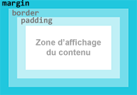
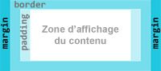
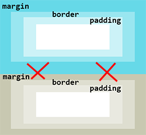
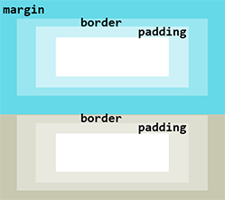
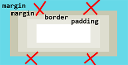
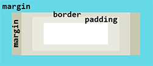

Les marges externes (margin) permettent de créer de l'espace entre
les boîtes des éléments HTML.
Les éléments de type bloc ont des marges sur les 4
côtés de leur boîte.
Les éléments en ligne ont des marges uniquement à
droite et à gauche.

Marges externes type bloc

Marges externes type en ligne
Les marges externes sont toujours
transparentes et il n'est pas possible de leur donner une couleur ou
une image de fond.
Certains éléments ont des marges externes prédéfinies par les
navigateurs (par exemple body, p, ul, etc).
Ces valeurs prédéfinies peuvent être différentes d'un navigateur à
un autre.
Pour être sûr d'avoir les mêmes marges sur tous les navigateurs, il
est conseillé de les fixer dans la feuille de style pour les
éléments utilisés dans les pages (voir Principes
généraux => La cascade).
Si les marges externes ne sont pas prédéfinies ou omises,
elles ont par défaut la valeur 0.
L'unité de taille pour définir une marge est à choisir en fonction
du dispositif d'affichage. Par exemple il ne faut pas utiliser des
centimètres pour afficher sur un écran pour lequel on privilégiera
le pixel CSS (px), le cadratin (em), le
pourcentage (%) ou la référence à la racine du document
(rem).
Les unités utilisées peuvent être différentes pour chacune des
marges d'un élément.
Si les marges externes hautes et basses (margin-top et
margin-bottom) sont exprimées en
pourcentage (%), la valeur est calculée par rapport à la longueur de la boîte et pas par rapport à la hauteur.
Les marges externes permettent de centrer horizontalement un bloc
dans son conteneur : il faut donner la valeur auto aux
marges droite et gauche.
Les marges externes peuvent avoir une valeur négative.
La propriété margin
La propriété margin
est un raccourci qui permet de définir les marges des 4 côtés en une
seule fois.
On peut affecter 1, 2, 3 ou 4 valeurs à la propriété margin.
Remarque : la forme avec 3 valeurs
est rarement utilisée : la marge haute aura la 1ère valeur, les
marges droite et gauche auront la 2ème valeur et la marge basse aura
la 3ème valeur.
La fusion des marges (collapsing margins) concerne les marges
supérieures et inférieures des boîtes de type bloc. Quand 2 boîtes
se suivent, il n'y a pas addition de la marge inférieure du 1er bloc
avec la marge supérieure du 2ème bloc. Seule la marge la plus haute
est conservée.

pas d'addition des marges verticales

seule la marge la plus haute est gardée
La fusion des marges (collapsing margins) concerne aussi les marges
supérieures et inférieures des boîtes qui sont imbriquées. Quand 2
boîtes sont imbriquées, il n'y a pas addition de la marge supérieure
du bloc parent avec la marge supérieure du bloc enfant. Seule la
marge la plus haute est conservée. On a le même procédé pour les
marges inférieures.

pas d'addition des marges verticales

seule la marge la plus haute est gardée
Le mécanisme de fusion des marges des boîtes imbriquées est
arrêté si le bloc parent contient du texte, ou si il a une bordure.
Le mécanisme de fusion des marges des boîtes n'est pas utilisé pour
les boîtes en positionnement flottant (float: left ou float:
right), en positionnement absolu (position: absolute)
ou en positionnement fixe ( position: fixed).